CSOUND.30 PARTICIPANTS
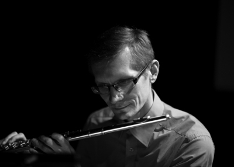 Tarmo JohannesTarmo Johannes is a versatile musician currently playing flute in a variety of contemporary music ensembles. Since 2009 he has been actively involved using Csound that has turned into an essential part of his creative output - interactive sound-games, computer aided performance tools, performances of electro- acoustic music, sound installations. Tarmo Johannes is currently also the main developer of CsoundQt, the most used Csound front-end. |
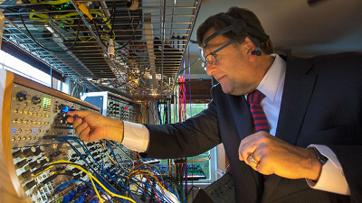 Dr. Richard BoulangerFor me, music is a medium through which the inner spiritual essence of all things is revealed and shared. Compositionally, I am interested in extending the voice of the traditional performer through technological means to produce a music that connects with the past, lives in the present and speaks to the future. Educationally, I am interested in helping students see technology as the most powerful instrument for the exploration, discovery, and realization of their essential musical nature—their inner voice. |
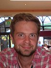 Brian CartyBrian Carty is currently Director of Education at Sound Training in Temple Bar, Dublin (soundtraining.com). He completed a PhD, funded by IRCSET and NUI Maynooth (Hume Scholarship), at NUI Maynooth, Ireland in 2011. His main research interest is headphone based audio with a particular interest in how we can locate sound sources in our auditory environment, and how sound sources at particular locations / moving sound sources can be artificially recreated. Although this research focuses on digital signal processing algorithms and software development, he is ultimately interested in the creative application of this work. |
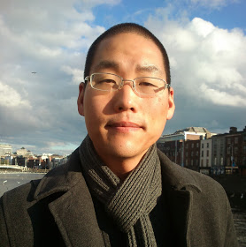 Steven YiSteven Yi is a composer and programmer. He is the author of the Blue Integrated Music Environment, author of Pink and Score music libraries, and core developer of Csound. He holds a PhD in Digital Arts and Humanities from the National University of Ireland, Maynooth. In his free time, he enjoys practicing and studying T'ai Chi. |
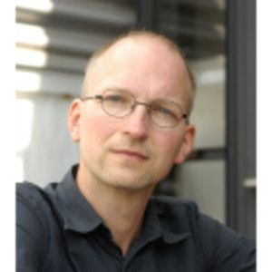 Jan Jacob HofmannJan Jacob Hofmann was born 1966 in Duesseldorf, Germany. Diploma, branch of architecture at the Fachhochschule Frankfurt/M, University Of Applied Sciences in 1995, worked then at an office for architecture. Entered the class of Peter Cook and Enric Miralles at the Staedelschule Art School Frankfurt/M in 1995, a postgraduate class of conceptual design and architecture. Diploma at the Staedelschule in 1997. Works as a composer, photographer and architect since. Sound and composition: Since 1986 dealing with sound- composition and electronic music. Music for performances. Since April 2000: Work on spatialisation of sound. Several international performances in America, Europe and Asia since. Research on Ambisonic and other spatialisation techniques. Development and publication of Csound based tools for spatialisation via 3rd order Ambisonic. |
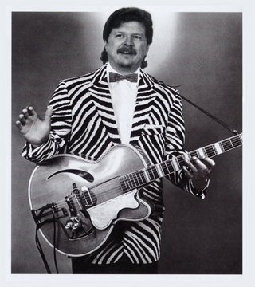 Dave PhillipsDave Phillips is a composer/performer/educator living in Ohio USA. His studies include classical guitar with Sophocles Papas (Washington DC) and music composition with Michael Jon Fink (Los Angeles CA). He has been an active user of Csound since 1989. Since the mid-90s he has focused on using Linux as a music and sound production platform, working with developers to improve and expand the audio software available for Linux users. Dave is the author of one book and hundreds of articles, all about Linux music and sound software. He has also contributed to various other documentation projects, again all related to Linux audio topics. His electroacoustic compositions have been played in concerts and festivals at Bowling Green State University, Virginia Tech, and CCRMA at Stanford University, and he continues to perform as a solo guitarist/singer and in various local groups. |
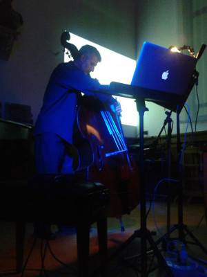 Enrico FrancioniEnrico Francioni graduated in Electronic Music and double-bass at the Rossini-Pesaro. His works are carried out to Oeuvre-Ouverte, Cinque Giornate per la Nuova Musica, FrammentAzioni, CIM, EMUfest, VoxNovus, ICMC, Bass2010, Acusmatiq, etc. He performed the world premiere of the Suite I F.Grillo. From author and soloist was awarded in national and international competitions. He has recorded for Dynamic, Agora, Orfeo and others. He is dedicated to teaching and has taught double-bass at the Rossini-Pesaro. |
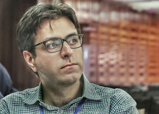 Arsalan ObedianArsalan Abedian was born in 1984 in Tehran, Iran. In 2007 graduated from Azad university with a bachelor’s degree in composition, in 2011 from Art university of Tehran with a master’s degree in composition, in 2014 from Hanover University of Music, Drama and Media with a master’s degree in electronic composition, and in 2016 got a Soloklasse Konzertexamen degree in composition from the same university where he studied with Oliver Schneller, Joachim Heintz, Gordon Williamson and Ming Tsao. He is a founding member of “Yarava Music Group” (one of the few ensembles and societies for new music in Iran). In 2009 he established “Contemporary Music Records” in Tehran. Since 2003 he has written and translated more than 40 articles about contemporary music, in persian music journals as well as in “MusikTexte” (2014) and “Lexikon Neue Musik” (2015) in Germany. His works have been performed by different ensembles in different festivals in Germany, Denmark, France, US, Uruguay, Russia and Iran. |
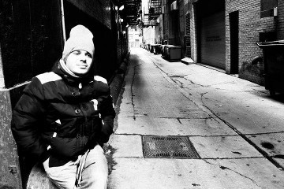 Anthony di FuriaAnthony di Furia began playing the drums at age 4, piano at 6 and violin at 11. In 2004 he graduated in guitar, theory and arrangement (Percentomusica of Rome). He studied composition at the Conservatory of Fermo and Electronic Music at the Conservatory of Pesaro with Eugenio Giordani and David Monacchi. Bachelor’s degree cum laude in Music and New Tecnology - Conservatory of Pesaro. He approaches the world Unix/Linux and Free Software thanks to the friendship of the founders of ILDN - Italian Linux Distro Network. He worked as assistant to Ambisonics Spatialization in the multimedia performance “De Divina Proportione” - Simone Sorini and David Monacchi, as Sound Design with Stefano Vinciarelli in the Theater Show “La fuga” (Escape) at the presence of author Gao Xingjian, Nobel Prize 2000. In 2012, in partnership with Eugenio Giordani, Anthony realised a Live Electronics for the conference show “Bestiario filologico e fantastico” - Ermanno Cavazzoni. In May 2014, he takes part in the FKL SOUNDSCAPE MEETING in Florence with Rad’Art Project and he plays in the Linux Audio Conference 2014 - ZKM in Karlsruhe, Germany. In August 2014, He works on the his project “Beyond the human atom” for a site-specific residency in LA CHAMBRE BLANCHE (Quebec City) - exchange program with the artistic center Rad’Art located in Italy. Most recently he worked as analyst and software developer for the project “Fragments of extinction” by David Monacchi. His work ranges from Sound Research, Sound Designer, Programming, Live Electronics, Sound Installations, Spatialization Techniques, Sound Engineer and Field Recording. |
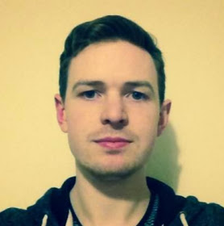 Matthew GeogheganI am a musician & composer from Wicklow, Ireland. Coming from a background of performing and producing modern popular music, my interests broadened while completing an MA in Creative Music Technologies in 2016. Being introduced to tools such as Csound opened up a world of possibilities for me as a composer which I will likely be exploring throughout the rest of my musical career. |
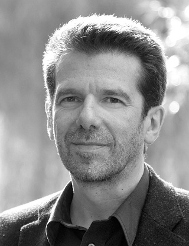 Clemens von ReusnerClemens von Reusner (b. 1957) is a composer and soundartist based in Germany, who is focused on acousmatic music. He studied musicology and music-education, drums with Abbey Rader and Peter Giger. Since the end of the 1970s he has been engaged in electroacoustic music, radio plays and soundscape compositions. At the end of the 1980s development of the music software KANDINSKY MUSIC PAINTER. Member of the German Composers Society (DKV) and of the German Society For Electroacoustic Music (DEGEM). Numerous national and international broadcasts and performances of his compositions in Americas, Asia, Europe, i.a.: Musica Nova 2009, Prague; Seoul International Computer Music Festival 2010/2014, Seoul; International Csound Conference 2011, Hannover; International Computer Music Conference 2012/2013/2015; Noise Floor Festival 2010/2011/2015, Stafford (UK); ISCM World New Music Days 2011, Zagreb; Opus Medium Project 2011, Tokyo; Aaron Copland School of Music 2011, New York; EMUFest 2012/2013/2015, Rome, Italy; Electro Arts Festival 2013, Cluji Romania; Network Music Festival 2013, Birmingham; ZKM Karlsruhe, 2014; Linux Audio Conference 2014/2015; ICMC 2015 Denton, Texas USA; Auricle Sonic Arts 2015, New Zealand; Concierto Octofonico, Montevideo, Uruguay 2013/2015; Festival KONTAKTE, Academy of the Arts, Berlin, 2015; New York City Electroacoustic Music Festival 2014/2015/2016; International Csound Conference 2015, St. Petersburg, Russia; CMMR 2016, Sao Paulo, Brasil; ICMC 2016, Utrecht, Netherlands; 2016; SMC 2016, Hamburg, Germany. www.cvr-net.de info@cvr-net.de |
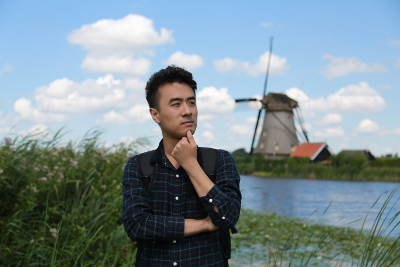 Wang LichuanWang Lichuan is a graduate student from Electronic Music Department, Sichuan Conservatory of Music, Chengdu City, China. He has studied Csound for 1 year during his undergraduate period. |
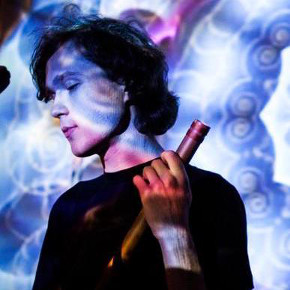 Anton Kholomiov |
|
 Martin
Crowley
Martin
Crowley
Federico RussoFederico Russo began to study the electric bass when he was 13 under Andrea Grossi, enrolling in the courses of the Accademia Nova of Rome. He also studied cello, with the concert performer and professor of the Istituto Superiore di Studi Musicali Gaetano Braga of Teramo Matteo Scarpelli. During his studies, he also played, composed and arranged music with his band, Libra: the band played in some of the more important stages of the Roman scene, but also in other cities thanks to the promotional tour for the album Sottopelle (Volcan records), this landed the band on MTV new generation. After that he started to study sound engineering at the Saint Louis college of music in Rome, where he founded with two colleagues the One Got Fat Collective for experimental electronic music and videos. In addition to that, during the sound engineering studies he met the experimental music composer Luca Spagnoletti, who introduced him to audio programming, specially the object programming of Max msp. |
|
 Shane
Byrne
Shane
Byrne
|
 Thom
McDonnell
Thom
McDonnell
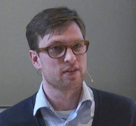 Alex HofmannAlex Hofmann (*1980) studied saxophone, improvisation and computer music at the Hochschule für Musik und Theater Hannover with Mattias Schubert and Joachim Heinz. He worked as a sound designer and obtained a PhD in music acoustics at the University of Music and Performing Arts Vienna, where he is currently working as researcher (http://iwk.mdw.ac.at/hofmann.htm). |
Bernt Isak WærstadBernt Isak Wærstad is a musician, composer, sound designer, with a master in music technology. He is currently a lecturer at the Music Technology groups at NTNU and Norwegian Academy of Music, a sound designer and mix engineer at Pipa Lydbyrå and works freelance as a musician, producer and sound engineer. Bernt Isak is also a member of several musical constellations as Vingelklang, T-EMP, Lashings of the Old Ultraviolent and COSMO Collective to mention a few. |
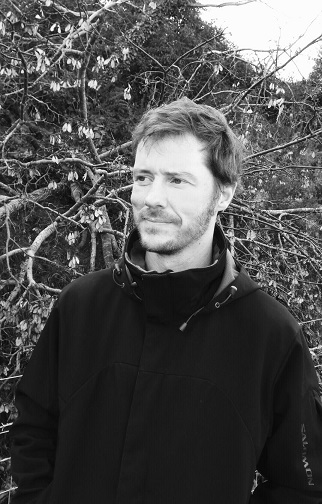 Rory WalshAfter completing post-graduate music studies at N.U.I. Maynooth, Rory began an 18 month residency at La Villa Media in southern France. Under funding from the French Ministère de l'Éducation he worked as a developer of educational music software for French second-level schools. Following his sojourn in France he returned to N.U.I. Maynooth as a lecturer on their MA in Computer Music degree before eventually joining DkIT as a full member in the School of Computing, Music and Creative Media. Rory has collaborated with a diverse range of artists both as a musician and in the capacity of audio software programmer. His music has been performed at festivals all over Europe and his software is being used in universities around the world, including Berklee College of Music in Boston Massachusett, Trondheim University,and St.Petersburg's University of Telecommunications. Rory has presented his academic research at conferences throughout Europe and was a contributor to the “Audio Programming Book” published by M.I.T. Press earlier in 2011. All of Rory's audio software is available for free under the GNU General Public License. |
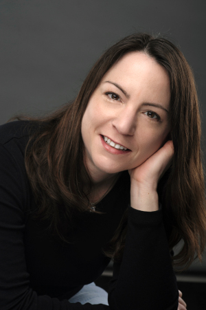 Linda AntasDr. Linda Antas is a composer, computer music and audio specialist, flutist, and educator. Her compositions have been performed and broadcast around the world and are published on Media Café, TauKay, Centaur, and EMS labels. A Fulbright Fellowship recipient, Antas has also been recognized by the International Music Contest Citta' di Udine (TauKay Edizioni Musicali), and has received commissions from the International Computer Music Association, the Rind Fund, and internationally-renowned performers including Eric Mandat. She has performed as a flutist at the National Flute Association Convention, the Phonos Foundation’s (Barcelona) “Instrumental-Electroacoustica VI Festival”, the Seattle Chamber Players’ “Icebreaker Festival”, and performed Elliot Carter's Esprit Rude / Esprit Doux with clarinetist Eric Mandat in celebration of the composer's 100th birth year. She regularly collaborates with a variety of visual and sound artists and serves on the faculty of Montana State University. |
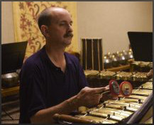 Bill AlvesBill Alves is a composer, writer, and video artist based in Southern California. He has written extensively for conventional acoustic instruments, non-Western instruments (especially Indonesian gamelan) and electronic media, often integrated with abstract animation. CDs of his audio works include The Terrain of Possibilities (EMF) and Imbal-Imbalan (Spectral Harmonies), and a dvd of his video works, Celestial Dance is published by the Kinetica Video Library. He is the author of the book Music of the Peoples of the World, the third edition of which was released by Cengage/Schirmer in Spring 2012. Other writings have appeared in Organised Sound, Perspectives of New Music, Computer Music Journal, SEAMUS Journal, 1/1, and elsewhere. In 1993-94 he was a Fulbright Senior Scholar Fellow in Indonesia, where he studied the gamelan orchestra music of Java and Bali. He currently directs the HMC American Gamelan, an ensemble of specially tuned Javanese instruments dedicated to the performance of new, non-traditional music. He is one of the organizers of MicroFest, the annual Southern California festival of new music in alternate tunings. He teaches at Harvey Mudd College of the Claremont Colleges in Southern California. |
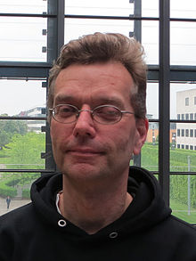 Joachim HeintzJoachim Heintz after studying Literature and Art History, began his composition studies with Younghi Pagh-Paan and Guenter Steinke in Bremen in 1995 at the Hochschule Fuer Kuenste. During the course of his studies in Bremen, he worked intensively in the electronic music field and also with mixed media such as video. He is the head of the electronic studio Incontri at the HMTM in Hannover (Hanover University of Music Drama and Media), teaches Audio-Programming at the HfK Bremen and is a member of the Theater der Versammlung in Bremen. He composes both for instruments and electronics, for concerts, sound installations, performances and as theatre music. He is an active member of the Open Source community, in particular in the development of Csound and CsoundQt.
|
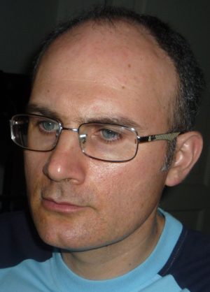 Massimo FragalàMassimo Fragalà graduated in Electronic Music and in Classical Guitar. His music has been selected and performed in many festivals and conferences worldwide including ICMC 2003, ICMC 2005, Festival Zèppelin 05, EAR Sounds Electric 2005, LAC06, ICMC 2006, Festival Mùsica Viva 2008 (Sound Walk), NWEAMO 2008, Taukay FrammentAzioni 2008, Vox Novus 2008 (60x60 project), LAC 2011, Emufest 2011, 60x60 2012 PianoForte Mix, Csound Conference 2013, LAC2015, Csound Conference 2015, etc.. . One of his electroacoustic compositions has been published on CD by Electronic Music Foundation (EMF). |
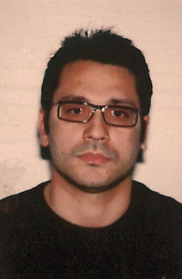 Massimo AvantaggiatoMassimo Avantaggiato studies composition at Conservatorio Giuseppe Verdi in Milan. Since his mid-teens he has concentrated on expanding his musical landscape using electronics, unusual recording techniques and computer-based technology, all of which help him to develop his idea of sound and composition. He took a degree in Electroacoustic Composition with Honour at “Giuseppe Verdi” Conservatoire in Milan and a degree as a Sound Engineer (Regione Lombardia). He has written music for short films and installations and also music for TV adverts; he has recorded several CDs for various Italian and foreign labels. Recently his interest has moved towards Multimodal Interaction in Virtual Environments (selected for a stage @ Aalborg University, Denmark, 2011) and towards adaptive sound design and music (Music and Screen Media Conference 2014, Liverpool; ATMM2014, Ankara, Turkey). He has recently participated in: EMUFEST2016 (Rome), Diffrazioni Festival 2016 (Florence, italy); ISSTA 2016(Belfast); Cycle du son (Fundacion Destellos, Argentina, 2016), NAISA 2016 (Toronto, Canada); SMC 2016 (hamburg, Germany); NYCEMF 2016 (New York, USA), Soundthought 2016 (Glasgow), Csound Conference 2015, Saint Petersburg, Russia; LINUX Audio Conference 2015, Mainz, Germany; Giordano National Composition Contest 2014 (finalist), Conservatorio di Foggia, Italy; CIM14 Conference on Interdisciplinary Musicology, Berlin, Germany; CIM 2014, Conservatorio S. Cecilia, Rome (Italy); ATMM 2014, Ankara, Turkey; International Computer Music Conference 2014, Athens, Greece; ICMPC-APSCOM2014, Seoul, South Korea; Slingshot Festival 2014 (Athens, South Georgia, USA); EMS 2014 (Universität der Künste, Berlin); Music and Screen Media Conference 2014 (Liverpool University); Music as a Process (Christ Church University, Canterbury, England) ; FAS2013 (San José Costa Rica); Contemplum 2013 (Philadelphia, USA); Premio Nazionale delle Arti/composition contest 2013, Avellino, Italy; EMU Festival 2010 and 2013 (Rome, Italy) ; Distanze 2012 (Catania, Italy) ; Segnali 2012 (Perugia, Italy); CSound Music Conference 2011 (Hannover, Germany); IFIMPAC 2011 (Leeds, England). |
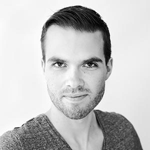 Hlöðver Sigurðsson |